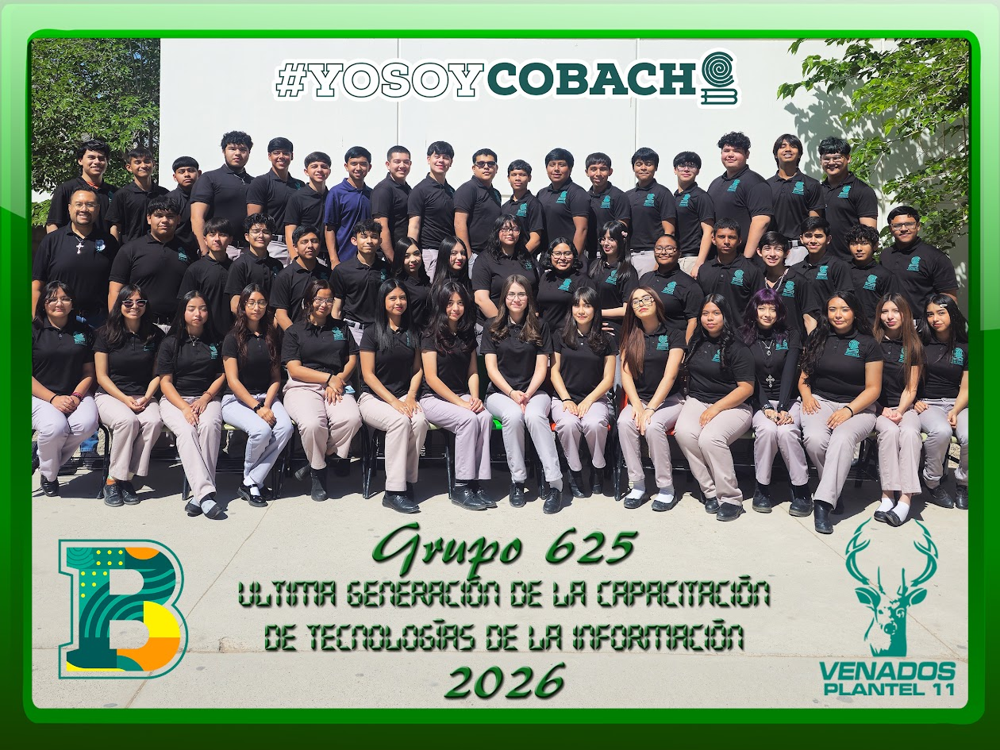

Durante estos años compartimos clases, proyectos, desvelos, risas y grandes aprendizajes dentro del laboratorio de informática.
Cada práctica realizada y cada momento vivido nos ayudó a crecer tanto académica como personalmente.
Aunque hoy termina esta etapa, los recuerdos permanecerán para siempre en nuestros corazones.